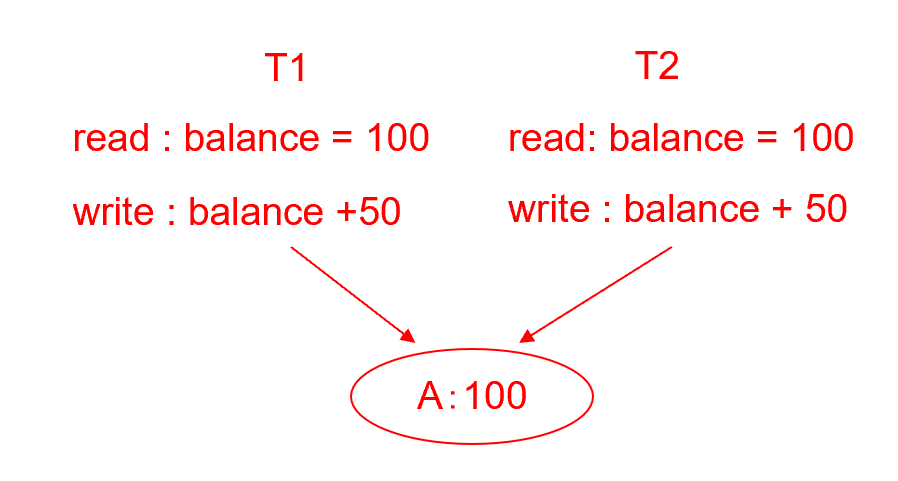
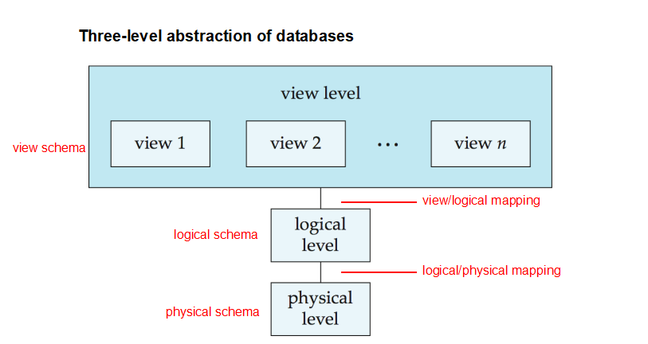
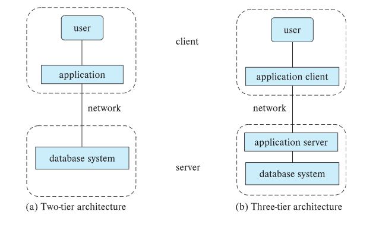

Part1
Info
Course Pracitce¶
- 数据库系统实验要求
- 图书管理系统实验
- minisql
Grading Policy¶
- assignments 10
- quizs 10
- experiments 30
- final 50
1 Purpose of Database Systems¶
- Data redundancy and inconsistency 数据冗余与不一致
- Difficulty in accessing data 存取数据困难
- need to write a new program to carry out each new task
- Data isolation 数据孤立
- Integrity problems 完整性问题
- 约束条件没有显示声明
-
Atomicity of updates 原子性问题
Example
transfer of funds from one account to another should either complete or not happen at all
-
Concurrent access anomalies 并发访问异常
Example

- Security problems
- Authentication (认证), Priviledge (权限), Audit (审计)
2 Characteristics of Databases¶
- data persistence
- convenience in accessing data
- data integrity
- concurrency control for multiple user
- failure recovery
- security control
3 Levels of Abstraction（抽象层次）¶
- Physical level（物理层）: describes how a record (e.g., instructor) is stored.
- Logical level（逻辑层）: describes data stored in database, and the relationships among the data.
- View level（视图层）: application programs hide details of data types. Views can also hide information (such as an employee’s salary) for security purposes.
4 View of Data¶

5 Schema and Instance¶
5.1 Schema¶
- the logical structure of the database
- Analogous to type information of a variable in a program
- Physical schema（物理模式）: database design at the physical level
- Logical schema（逻辑模式）: database design at the logical level
5.2 Instance(实例)¶
- the actual content of the database at a particular point in time
- Analogous to the value of a variable
6 Data Independence¶
- Physical data independence: the ability to modify the physical schema without changing the logical schema
- Logical data independence: the ability to modify the logical schema without changing the user view schema
7 Data Models¶
7.1 A collection of tools for describing¶
- data 数据
- data relationships 联系
- data semantic 语义
- data constraints 约束
7.2 Relational Model¶
- columns / attributes 列/属性
- rows / tuples 行/元组
8 Database Languages¶
8.1 Data defimition language (DDL) 定义语言¶
Example
- DDL compiler generates a set of table templates stored in a data dictionary（数据字典）
- Data dictionary contains metadata (元数据， i.e., data about data)
- database schema/integrity constraints/authorization
8.2 data manipulation language (DML) 操作语言¶
- SQL is the most widely used query language
- two classes of languages
- procedural 过程式 （user specifies what data is required and how to get those data）
- declarative 陈述式 （without specifying how to get those data）
9 Transaction Management¶
- A transaction is a collection of operations that performs a single logical function in a database application.
- Ensures that the database remains in a consistent (correct) state despite system failures (e.g., power failures and operating system crashes) and transaction failures.
- Concurrency-control manager controls the interaction among the concurrent transactions, to ensure the consistency of the database.
10 Database Architecture¶
- Centralized databases（集中式数据库） :
- 一到少数几个核心，共享内存。
- 客户端-服务器架构：一台服务器代表多个客户端执行任务。
- Parallel databases（并行数据库） :
- 多 core 共享内存。
- Shared disk（共享磁盘）(集群): 所有节点共享访问相同的磁盘存储。
- Shared nothing（无共享）: 每个节点拥有自己的磁盘存储，节点之间通过网络通信。
- Distributed databases（分布式数据库） :
- 地理分布。
- 模式/数据异构性。
11 Database Applications¶
- Two-tier architecture: 应用程序驻留在客户端机器上，并在客户端调用服务器端的数据库系统功能。
- Three-tier architecture: 客户端机器充当前端，不包含任何直接的数据库调用。客户端通过某种界面（通常是表单界面）与应用服务器通信。应用服务器再与数据库系统通信以访问数据。
Note

12 Database Administrator(DBA)¶
Functions¶
- Schema definition
- Storage structure and access-method definition
- Schema and physical-organization modification
- Granting of authorization for data access
- Routine maintenance
Homework¶
1.7 List four signifcant differences between a file-processing system and a DBMS¶
| file-processing system | DBMS | |
|---|---|---|
| 1 | Difficulty in accessing data(need to write a new program to carry out each new task) | convenience in accessing data |
| 2 | Integrity problems | data integrity |
| 3 | Concurrent access anomalies | concurrency control for multiple user |
| 4 | Security problems | security control |
1.8 Explain the concept of physical data independence and its importance in database systems.¶
- The ability to modify the physical schema without changing the logical schema
- Importance: changes in some parts do not seriously influence others
1.9 List five responsibilities of a database-management system. For each responsibility, explain the problems that would arise if the responsibility were not discharged.¶
- Data integrity: Ensures that the data is accurate and consistent. If not, the system cannot be able to detect and the errors.
- Concurrency control: Ensures that multiple users can access the data simultaneously without interfering with each other. If not, the system may lead to unpredictable results.
- Security: Ensures that the data is protected from unauthorized access and modification. If not, the system may be vulnerable to attacks.
- Recovery: Ensures that the system can recover from failures and maintain its integrity. If not, the system may be unable to recover and the data may be lost.
- Data persistence: Ensures that the data is stored permanently. If not, the data may be lost permanently.
1.15 Describe at least three tables that might be used to store information in a social-networking system such as Facebook.¶
Table 1:
| ID | user names | ages | emails | passwords |
|---|---|---|---|---|
Table 2:
| post_id | post_title | post_content | post_date | post_author |
|---|---|---|---|---|
Table 3:
| comment_id | comment_content | comment_date | comment_author | post_id |
|---|---|---|---|---|